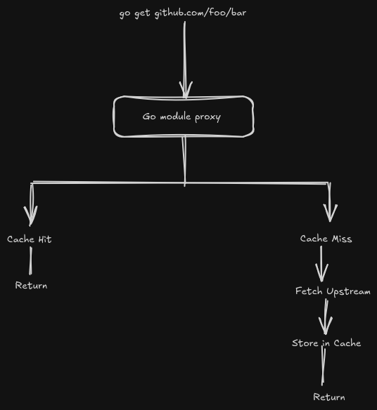
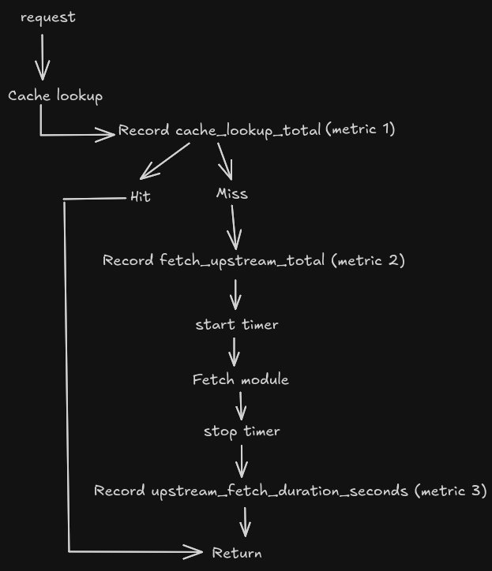
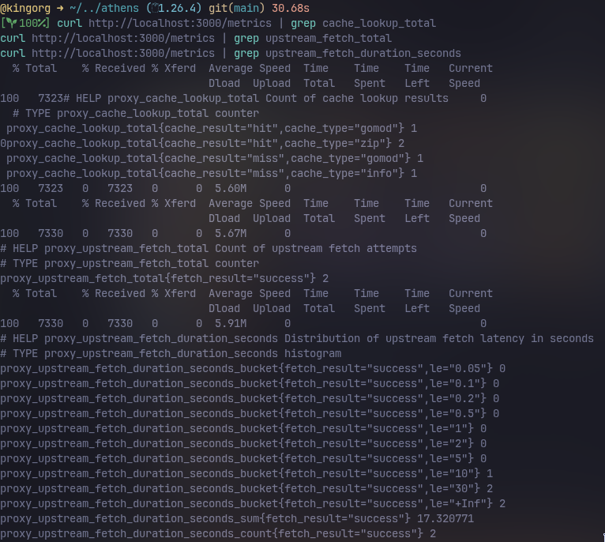

Introduction
When you run a service in production, one of the first questions you would want to ask after deploying it is, "How is it performing?" For a Go Module Proxy like Athens, that translates to questions like:
- How many requests are served from cache?
- How often is the proxy fetching modules from upstream sources?
- Are these upstream sources becoming slower over time?
Without instrumentation, these questions are difficult to answer and operators often have to rely on logs or guesswork instead of concrete, measurable data.
While exploring the Athens codebase for a potential open source contribution, I noticed that these insights were not readily available through metrics. That observation led me to propose and implement a set of OpenCensus metrics covering cache lookups and upstream fetch operations.
In this post, I walk through the engineering behind that contribution and the design decisions that shaped it.
The pull request was merged roughly three months before this article was written. You can view the PR here.
What is Athens?
Before diving deeper, it helps to understand where Athens sits in the Go ecosystem.
When you run go get or go mod download, the Go toolchain typically fetches modules through a module proxy instead of contacting version control systems directly. A module proxy serves previously downloaded artifacts from local storage and only reaches out upstream when a requested module is missing.

Unlike Google's public module proxy, Athens is designed to be self-hosted and fully under the operator's control. It supports multiple storage backends including local filesystems and object stores like S3 and MinIO, making it attractive for organizations that need reproducible builds and reduced dependency on external services.
How It Started
I've always been curious about how Go manages dependencies under the hood. Learning about go get, go.mod, go.sum, mirrors, and proxies made me appreciate the engineering behind Go's module system.
After discovering Athens, I forked the repository and spent a few days exploring the codebase, tracing request flows, and understanding its architecture before attempting any changes.
While reading through the observability layer, I asked myself: If I were operating this service in production, what metrics would I want on my dashboard?
Athens already exposed some metrics, but I noticed visibility into cache lookups and upstream fetch behavior could be improved.
With that motivation, I opened an issue proposing these additions and after a green light from one of the members, I implemented the feature myself.
Designing the Metrics
As I traced the request lifecycle, I realized there was no easy way to quantify one of the most important characteristics of a caching proxy: how effectively it was using its cache. An operator could infer behavior from logs, but there was no dedicated metric indicating whether a module request resulted in a cache hit or required contacting an upstream source.
Similarly, while upstream fetches were a critical part of the request path, there was limited visibility into how frequently they occurred or how long they took. These values are especially useful when investigating increased latency, diagnosing cache misses, or monitoring the health of external dependencies.
Hence, I proposed three additional metrics:
- Cache lookup counter to track hits and misses.
- Upstream fetch counter to measure external downloads.
- Upstream fetch duration histogram to capture latency distributions.

The next challenge was determining where these metrics should be recorded.
Following the execution path through the codebase revealed two natural insertion points: cache lookup and upstream fetch.
Key Design Decisions
The implementation intentionally uses low-cardinality labels such as hit, miss, success, info, gomod, and zip.
Avoid using module paths or versions as labels. High-cardinality metrics create an explosion of time series and significantly increase monitoring costs.
For latency measurement, I chose histograms instead of averages.
Aggregation: view.Distribution(
0.05,
0.1,
0.2,
0.5,
1,
2,
5,
10,
30,
)Histograms preserve latency distributions and enable percentile calculations such as p95 and p99, whereas averages can hide significant outliers.
Implementation
The implementation introduced three new OpenCensus measures and corresponding views.
cache_lookup_totalupstream_fetch_totalupstream_fetch_duration_seconds
var (
cacheResult = tag.MustNewKey("cache_result")
cacheType = tag.MustNewKey("cache_type")
fetchResult = tag.MustNewKey("fetch_result")
)var (
cacheStats = stats.Int64("cache_lookup_total", "Count of cache lookup results", stats.UnitDimensionless)
upstreamFetchStats = stats.Int64("upstream_fetch_total", "Count of upstream fetch attempts", stats.UnitDimensionless)
upstreamFetchDurationStats = stats.Float64("upstream_fetch_duration_seconds", "Distribution of upstream fetch latency in seconds", stats.UnitSeconds)
)var upstreamExponentialBuckets = []float64{0.05, 0.1, 0.2, 0.5, 1, 2, 5, 10, 30}var (
cacheLookupView = &view.View{
Name: "cache_lookup_total",
Measure: cacheStats,
Description: "Count of cache lookup results",
TagKeys: []tag.Key{cacheResult, cacheType},
Aggregation: view.Count(),
}
upstreamFetchView = &view.View{
Name: "upstream_fetch_total",
Measure: upstreamFetchStats,
Description: "Count of upstream fetch attempts",
TagKeys: []tag.Key{fetchResult},
Aggregation: view.Count(),
}
upstreamFetchLatencyView = &view.View{
Name: "upstream_fetch_duration_seconds",
Measure: upstreamFetchDurationStats,
Description: "Distribution of upstream fetch latency in seconds",
TagKeys: []tag.Key{fetchResult},
Aggregation: view.Distribution(upstreamExponentialBuckets...),
}
)Cache lookups are tagged with both their result and artifact type, while upstream fetches record both outcome and duration.
Testing and Validation
To verify the implementation, I added unit tests that register the corresponding views, record sample events, retrieve aggregated data, and validate the expected values.
I also ran Athens locally and generated traffic through the proxy.
make run-docker
go env -w GOPROXY=http://localhost:3000
go mod download github.com/gorilla/mux@latest
go mod download golang.org/x/text@latest
curl http://localhost:3000/metrics | grep cache_lookup_total
curl http://localhost:3000/metrics | grep upstream_fetch_total
curl http://localhost:3000/metrics | grep upstream_fetch_duration_seconds
Results
The exported metrics confirmed that cache hits, cache misses, upstream fetches, and fetch latency distributions were being recorded correctly.
In my local testing, only two upstream fetches were required while subsequent requests were served from cache, demonstrating the effectiveness of the caching layer.
These metrics provide operators with actionable insights into cache efficiency and upstream dependency performance and can be visualized directly in systems such as Grafana.
Lessons Learned
Looking back, the most valuable part of this contribution was understanding the problem well enough to design the right solution and not writing the code.
The first lesson was that effective observability starts by asking the right questions rather than collecting every possible metric.
The second lesson was the importance of low-cardinality labels. Keeping labels low-cardinality ensures metrics remain scalable and inexpensive to store.
Finally, spending time understanding a mature codebase before implementing changes helped me learn a lot of new stuff. It also resulted in a smaller and easier-to-review pull request.